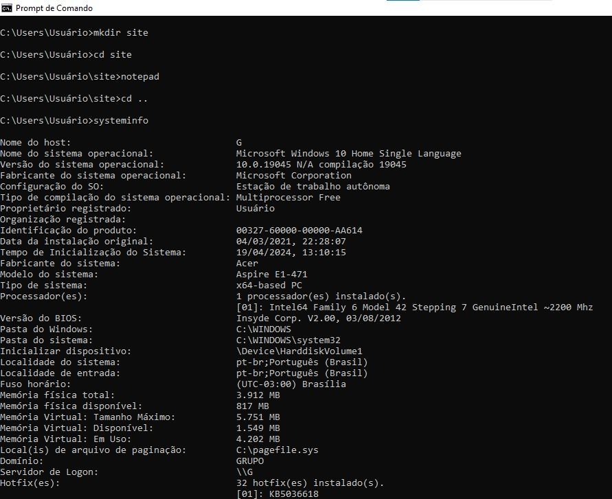

- cd - irá mudar sua pasta atual para o diretório pai.
- dir - Exibe uma lista de diretórios e arquivos sem informações adicionais.
- mkdir - Cria um diretório ou um subdiretório.
- del - emove a conta de um determinado usuário do sistema.
- copy - copia arquivos da ORIGEM para o DESTINO.
- move - move ou renomeia arquivos e diretórios.
- type - geralmente é usado para descobrir as informações sobre um comando Linux.
- findstr - Processa cadeias de caracteres de pesquisa literalmente.
- tasklist - Exibe uma lista de processos em execução atualmente no computador local ou em um computador remoto.
- attrib - mostrar os atributos de um arquivo e/ou alterá-los.
- shutdown - Encerrar a seção atual do Sistema.
- netstat - Exibe simbolicamente o conteúdo de várias estruturas de dados relacionados à rede para conexões ativas.
- ipcomfig - Use o Protocolo de Resolução de Endereço no mapeamento entre endereços de nível de rede e endereços de nível de link.
- ping - Testa a conectividade entre dois equipamentos físicos, a partir de uma rede.
- tracert - Verifica todos os saltos feitos de sua rede até o destino informado na sintaxe do comando.
- systeminfo - Exibe as informações detalhadas de configuração sobre um computador.
- robocopy - Além de copiar arquivos e diretórios de um local para outro, o Robocopy oferece recursos avançados como cópia multithread.
- hostname - Configura ou exibe o nome do sistema host atual.
- sort - Organiza as linhas de um arquivo texto ou da entrada padrão.
- chown - Alterar o proprietário de um arquivo.
